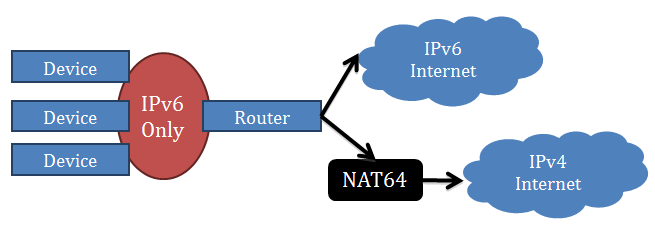

IPv6 OverView
Written by Dan York at: 11 January 2013
all of which is excellent news! Phil goes on to talk about Google’s measurement of over 1% of their traffic coming in over IPv6 and also the World IPv6 Launch measurements site that contains links to a variety of the sites measuring IPv6 traffic on an ongoing basis.
2012 was a great year for IPv6 – and now it’s time to continue building on that momentum. Have you deployed IPv6 yet for your network(s)? Is your website accessible over IPv6? Are your DNS entries available over IPv6?
Read More
the World IPv6 Launch measurements site
Written by Dan York at: 11 January 2013
The measurement activities below track different aspects of IPv6 deployment on the global Internet. The different measurements show various dimensions of the answer to the question of how broadly IPv6 is being used on the global Internet. The tables, charts, and links provide answers to questions such as: which websites have enabled IPv6, how many visitors to a specific website are using IPv6, how many networks have significant IPv6 deployment, and how much traffic at an Internet exchange is using IPv6?
Read More
Why should I care about IPv6?
Written by Dan York at: 11 January 2013

IPv6 is the future of the Internet, and without it the Internet can no longer grow.
We have been growing the commercial Internet for decades using IPv4 address space. At the time of its creation, IPv4 was not intended to satisfy the needs of a global commercial Internet. It was intended to support the needs of experimental research and government networks. We have known for many years IPv4 was a limited resource and that one day it would fully deplete. That day has come.
Read More